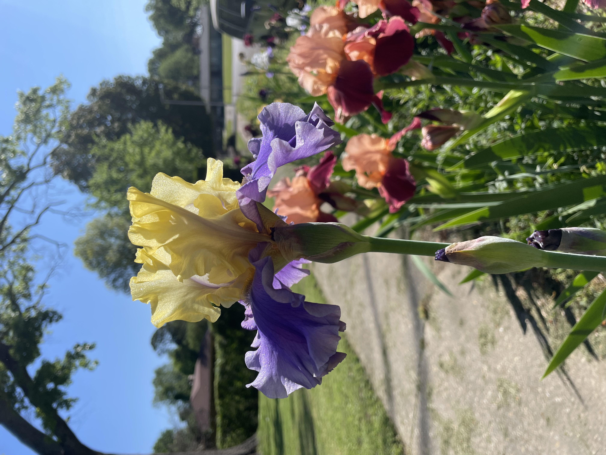

Animals are always central to my personal life - since before I started school. They used to be the focus of my career. Now, they are my hobby, since my career is more distanced from them.
Irises

Irises are amazing examples of diversity in nature. I like to grow them in my garden and see them mid-spring.